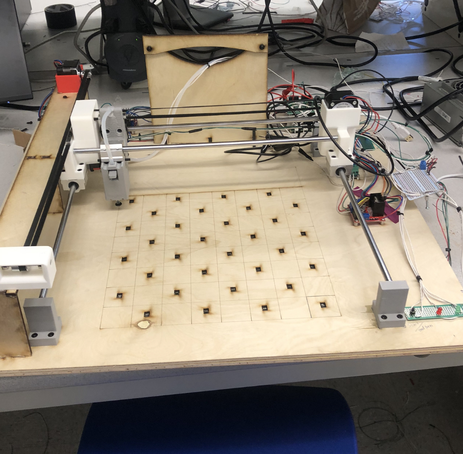
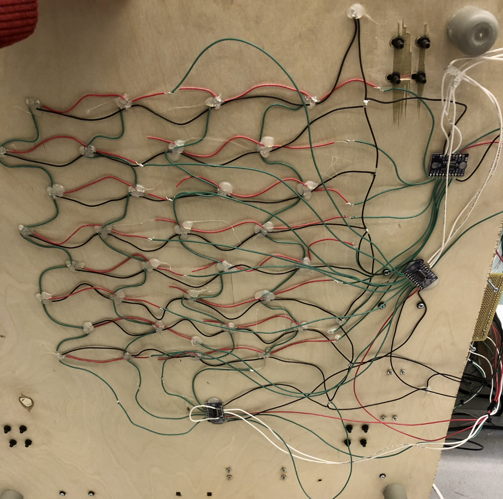
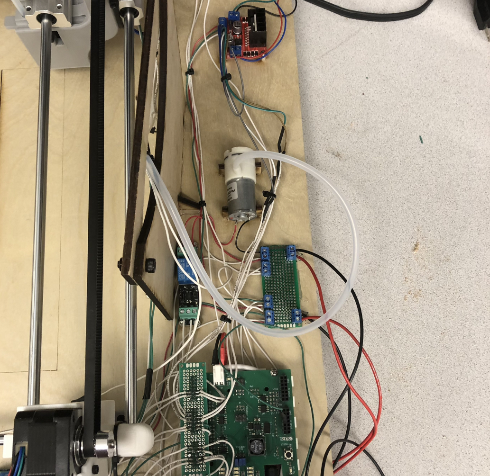
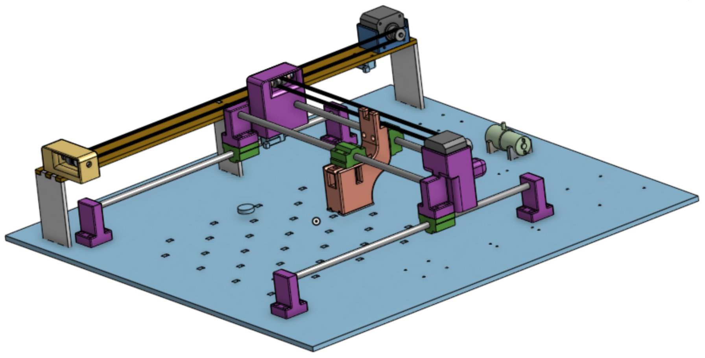

Overview
The checkers-playing robot begins by waiting for the player to initialize the starting configuration of the board. Once the "Play" button is pressed, the robot validates the board state to ensure it is playable, or at least one red player piece and one blue bot piece are present. The green LED turns on to indicate it is the player's turn. After the player completes their move by relocating a piece from its starting to ending position, they must press the "Play" button again. If the move is illegal, the red LED flashes to prompt the player to retry their turn. If the move is valid, the robot removes any captured pieces from the player's turn and then proceeds to make its own move.
Video Demonstration
System Summary
The checkers-playing robot uses a matrix of Hall-effect sensors to map the board conficuration, two stepper motors to move the gripper along the x-axis and y-axis to a target square on the board, and a vacuum pump to grip and move checkers pieces across the game board.
1. Board State
The board contains 32 Hall-effect sensors arranged in 8 rows and 4 columns. To capture the current board state, the Uno32 microcontroller reads one Hall-effect sensor at a time by iterating through all 32 playable squares on the board using selection bits. A 3-bit row selector connects to two demultiplexers, which supply power to the left and right pairs of Hall-effect sensors in the selected row. Meanwhile, a 2-bit column-select multiplexer routes the active Hall-effect sensor output to the microcontroller. Each reading is saved to a 2D matrix representing the current state of the board.
2. Gantry
The gantry moves the gripper payload to a target location by converting the XY coordinates of a board square measured in millimeters from the "home" position—into the corresponding number of motor steps. This step count is calculated based on the current position of the gantry to accurately reach the target location.
3. Vacuum Grip
The pick up and drop off functionality are controlled through driving the solenoid and DC vacuum pump. The pick up function enables the vacuum pump to turn on and the solenoid to lower towards the surface of the board. When moving the piece, the solenoid enable shuts off to eleveate the piece. When the gantry routes to the destination position, the vacuum enable is stopped and the piece falls into place.
4. Game Response
Player moves are decoded through comparing the board state with a simulated board state of every possible legal move that can be applied to the previous state of the board. When a match is found the move structure is saved for the robot to discard of captured pieces from the player's turn. The robot generates moves by utilizing the same legal move generator, only for the robot's pieces. These moves are transfered to a min-max algorithm to dertemine the optimal move for robot given the current board state.
Key Components
Gantry
Hall-Effect MUX
Vacuum Pump
CAD Assembly
Words of Wisdom
Always triple check sensor datasheets before making an order
Measure parts yourself, don't trust manufacturers' measurements
Account for time in the event of failures and redesign